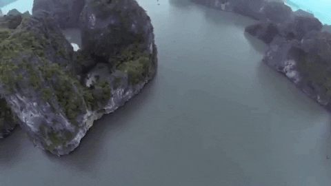

Ha Long Bay, Vietnam

Geographical Location: Asia
Ha Long Bay is a UNESCO world heritage site and a popular tourist destination in northeast Vietnam. The bay is famous for its crystal clear emerald colored waters dotted with limestone mountains that rise up from the water. Many tourists visit and take boat tours around the islands that tend to me named after their peculiar shape. For instance, tourists can take kayak expeditions around the Teapot islets, a set of islands shaped like teapots, or be rowed around Stone Dog, which appears to be shaped like a dog.
The Ha Long Bay region is popular for scuba diving, rock climbing and hiking, particularly in mountainous Cát Bà National Park. The nearest city is Hai Phong, which is approximately 75 km away. It is easier to reach Ha Long Bay by boat because the journey from Hai Phong to Ha Long Bay can take nearly 2.5 hours.
Photo Gallery


Guangzhou, China


Geographical Location: Asia
Guangzhou is the capital and largest city of Guangdong province in southern China. Located on the Pearl River about 120 km (75 mi) north-northwest of Hong Kong and 145 km (90 mi) north of Macau, Guangzhou has a history of over 2,200 years and was a major terminus of the maritime Silk Roa it continues to serve as a major port and transportation hub as well as being one of China's three largest cities.
Guangzhou is celebrated for its many handicraft products, including ivory carvings, jade objects, embroideries, fans, porcelain, and paper umbrellas. These, along with the citys famous cuisine and its many museums and other cultural attractions, have made Guangzhou one of China's principal tourist destinations.
Photo Gallery


Paris, France


Geographical Location: Europe
Paris is one of the oldest cities in Europe and the city of romance. With a vast amount of cultural history, lined with iconic landmarks, intimate scenes, and world-renowed art museums.
Paris welcomes millions of visitors annually, each drawn to its exquisite charm and beautiful ambiance. Enjoy tasty treats and exquisite cuisine await, while city landmarks illuminate the night sky.
Photo Gallery


Sequoia National Park


Geographic Location: North America
Sequoia National Park is a large forest located in the Sierra Nevada mountain range in California. It is famous for its gigantic sequoia and redwood trees, as well as its underground Crystal Cave. The park is a well-known attraction to many tourists, receiving more than a million visitors annually. In addition to its collection of giant trees, Sequoia National Park is also home to thousands of prevalent flora and fauna.
Perhaps the most famous feature of Sequoia National Park is the General Sherman tree – the largest tree in the world. Measuring in at 275 feet tall, the tree towers over the surrounding landscape and the people who come to view it. As of today, the General Sherman tree is estimated to be around 2200 years old.
Photo Gallery